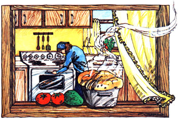

Texas may be known as a beef state, but that don't bother at least two folks who live there (and who prefer to be known only as Kim and Sam) none at all. The couple eats quite high on the bean sprout with recipes that are, in their words:
We love to cook and-using nothing but sprouts, grains, and canned or fresh foods-seem to invent a new recipe almost every day. Here are a few of our recent experiments . . . and all the whole grains and beans used in the originals came from Arrowhead Mills, P.O. Box 866, Hereford, Texas 79045.
Sam came to the window one morning after chopping wood and said, "Fix something really good for breakfast that's nutritious and different too." So I did.
1/4 cup of chopped nuts
1/4 cup of raisins or currants
1 large chopped apple
1 chopped banana
1/4 cup of wheat sprouts
1 tablespoon of mayonnaise
Mix the above together in a big wooden bowl and then beat together the following with a wire whisk:
1/4 cup of powdered milk
1/4 cup of honey
2 tablespoons of cold water
Pour the topping over the salad, place small squares of cheese around and on top of everything, and serve.
Sam's beans and Kim's frybread, we feel, are just right for each other. The bean recipe yields enough to serve several people, so make plenty of bread!
1 cup of pinto beans Water
1 quart of home canned tomatoes, bell peppers, onions, and green beans
1 teaspoon of salt
1/2 pound of chopped cheese
Cover the beans with enough warm water to keep them submerged as they swell, and soak them overnight in a large pot. The next afternoon, add the juice from the canned vegetables. Bring the mixture to a boil, then salt, cover, and cook over a medium heat for 1-1 /2 hours or until very thick. Add the canned vegetables and bring the concoction to a boil again. (If you canned your tomatoes alone, the other vegetables can be cooked separately and added in.) Add the cheese, stir, and put the lid back on the pot for one minute. Serve atop the following frybread:
3 cups of whole wheat flour
1 teaspoon of baking powder
1 tablespoon of powdered milk
1 tablespoon of honey or molasses
Mix the above ingredients together in a large bowl. Then add enough warm water to make a soft, easy-to-handle dough and knead the sponge until it's smooth. Separate the dough into balls and roll them out flat with a rolling pin. Then deep-fry the circles in hot fat or oil. Brown both sides, drain, top with Sam's beans . . . and accompany With a cup of hot spearmint or rosehip and catnip tea.
We conjured this up one night when we wanted to do away with some leftover bread, a quart of canned squash (organic, from our own garden), and some extra sprouted rye we had on hand. It's really a meal in itself and this recipe serves four.
3 small bell peppers
1 potato
1 onion
1 quart of canned squash
1/4 cup of rye sprouts
1/4 cup of soy and oat flour
1/4 cup of powdered milk
1/4 cup of oil
1 tablespoon of mayonnaise or 1 egg
Herbs (celery seed, marjoram, basil) to taste
3 pieces of whole wheat bread, crumbled
Sliced, grated, or chopped cheese as needed
First, chop the peppers, potato, and onion and put them in a big wooden bowl. Then drain the squash (taking care to save the liquid), add the squash and sprouts to the bowl, and stir in the flour.
Second, mix the milk, oil, mayonnaise, herbs, and one-half cup of the liquid saved from the squash together in a smaller bowl.
Third, oil a loaf pan or casserole and layer in the bread crumbs, vegetables, and cheese until it's filled. Put lots of cheese on top too.
Fourth and finally, pour the liquid mixture from the small bowl over all and bake immediately at 350 degrees F for 45 minutes or until firm.
The rye sprouts give this loaf a meaty taste that is really complemented by the herbs.
We have cabbage almost every week and I constantly sprout a lot of our organically grown beans and grains. This is a good way to use both. The recipe serves four.
Oil
1/2 cup of water
1 onion
1/2 head of cabbage
1/4 cup of soybean sprouts
1/2 cup of wheat or rye sprouts
Chopped nuts (optional)
1/2 cup of cooked brown rice (optional)
Pour enough oil into a skillet or frying pan to just cover its bottom. Add one-half cup of water and place the pan over the flame of a small fire. Then cut up the onion and cabbage and cook them, covered, in the skillet until they're tender (about 10 minutes). Sprinkle the sprouts on top and cook the dish for another five to seven minutes. Chopped nuts and one-half cup of cooked brown rice make great additions to this recipe. If you include them, stir either or both into the other ingredients during the last two or three minutes of cooking time.
These magical candies are good to make on a cold winter morn. Stoke up the stove and munch 'em all day long. They're so easy to prepare and so good for you!
1-1 /2 cups of honey
1-1/2 cups of peanut butter
1-1/2 cups of powdered milk
1/2 cup of nuts
1/2 cup of raisins
1 cup of flaked oats
Mix the honey, peanut butter, and powdered milk together. Next add the nuts, raisins, and oats. Then roll the mixture into small, bite-size balls, place them on a lightly greased cookie sheet, and chill until very firm.
You can leave these candies outside overnight and have them for breakfast the next day (things made with honey usually taste better after they've aged for a few hours). But, if you do, be sure to cover them because the honey they contain will absorb odors and moisture from the air.
|
|
 |
|